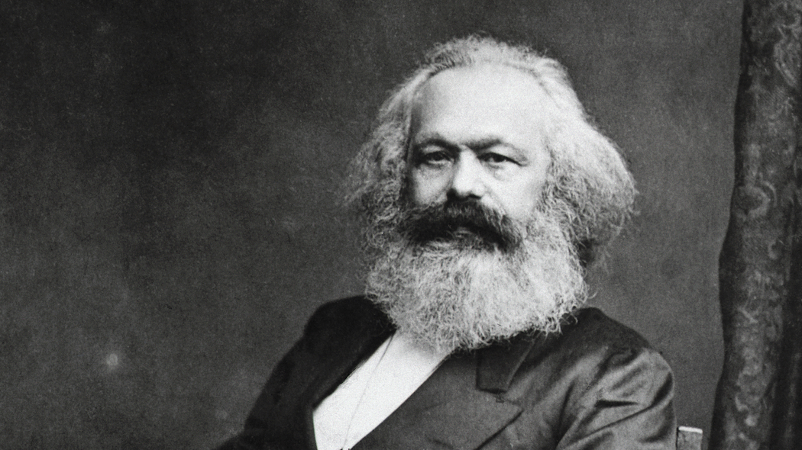

Karl Marx fu un filosofo tedesco vissuto nel XIX secolo. Esso era impegnato in campi come la politica, l’economia e il giornalismo. Partecipò attivamente al movimento operaio e divenne una figura importante nella Prima internazionale, ovvero l’Associazione internazionale dei lavoratori.
Il suo pensiero, basato su una critica dell’economia e della cultura capitalistica, esercitò un forte peso sulla nascita delle ideologie socialiste e comuniste, dando vita alla corrente socioeconomica del marxismo.
Per questo Marx è considerato tra i pensatori più influenti sul piano politico, filosofico ed economico dell’Ottocento e Novecento.
 Il filosofo tedesco Karl Marx.Karl Marx - Il Capitale
Questo brano tratto dall’opera Il Capitale di Marx spiega in breve come si è passati dalla prima macchina a vapore di Watt alle ciclopiche macchine di produzione dei motori. Questo sviluppo, definito come «macchinismo», è secondo Marx uno spacco insanabile tra passato e presente, e tra le classi sociali: una disuguaglianza con la quale il filosofo lotterà mediante il pensiero comunista.
L'invenzione della macchina-utensile inaugura nel secolo XVIII la rivoluzione industriale. Con la macchina a vapore a doppio effetto di Watt fu scoperto il primo motore capace di generare da se stesso la propria forza motrice, consumando acqua e carbone, ed il cui grado di potenza può venir completamente regolato dall'uomo. Mobile e mezzo di locomozione, cittadino e non campagnolo come la ruota idraulica, esso permette di concentrare la produzione nelle città invece di disseminarla nelle campagne, come avveniva nei processi di manifattura isolati nella divisione del lavoro. [...] Lo svolgimento del metodo di produzione in una sfera industriale porta con sé uno sconvolgimento analogo in un'altra sfera. Dapprima il fatto si rende manifesto nei rami di industria che si collegano come fasi di un complesso unico, poi la rivoluzione nell'industria e nell'agricoltura ha reso necessaria una rivoluzione dei mezzi di trasporto, di comunicazione, di distribuzione. Le macchine produssero altre macchine. A misura che nel primo terzo del secolo XIX la grande industria si sviluppò, il macchinismo si impadronì a poco a poco della fabbricazione delle macchine-utensili, e solo nel secondo terzo del secolo l'immensa costruzione delle strade ferrate e la navigazione a vapore fecero sorgere le ciclopiche macchine destinate alla costruzione dei primi motori.
Karl Marx e Friederich Engels, Il Capitale Libro Primo, 1867.